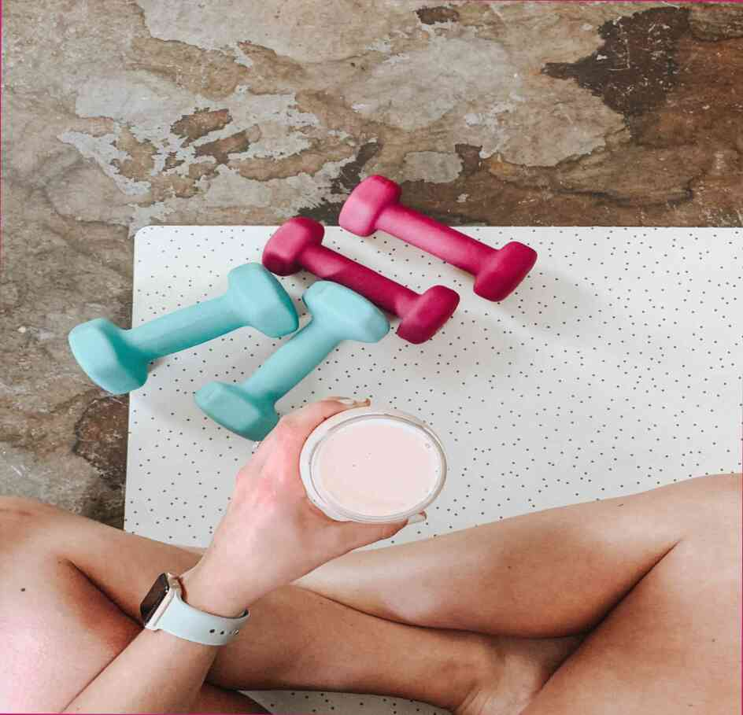

Die besten cardio-übungen können Sie zu Hause
Cardio-übungen stärken das Herz, die Blutgefäße und die Lunge, erhöht die Ausdauer, verbessern den Stoffwechsel und macht den Körper schlank und schön.Durchführung von cardio-übungen ist viel günstiger als Sie denken. Sie müssen n...

Make-up wie ein Stern. Ekaterina Klimova
Fotos aus dem Dienst Sehen, wie make-up, ändert sich das Aussehen der 40-jährige Schauspielerin, die in einem Fall zu verringern, und in einem anderen hinzufügen, um Ihre Jahre. Wenn Sie eine ähnliche Art von Auftritt, verwenden Sie die ...

Warum brauche ich eine IV-Creme?
Fotos von der service, Dies ist der Fall, wenn die Dekorative Kosmetik nicht die Haut schädigen, sondern im Gegenteil, vorhanden sind. Und dies ist nicht nur über die Creme. Seine Nutzung muss aus dem Gesetz. Betrachten Sie die Creme vor:...